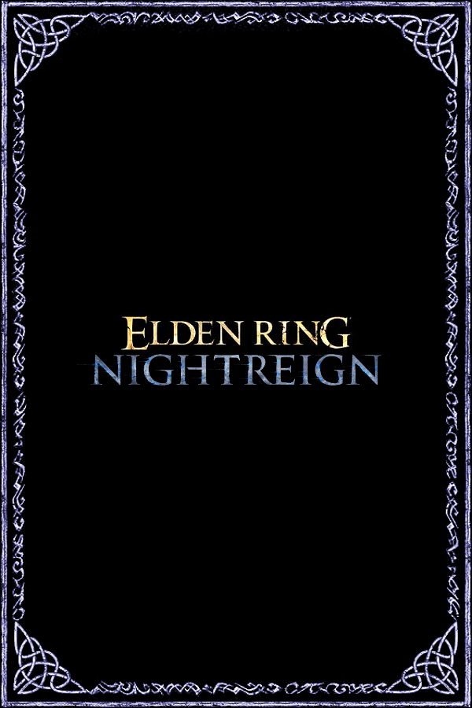

Game profile

Elden Ring: Nightreign
Every archived year-end list appearance, including placement and points earned.
About the Game
Elden Ring Nightreign is a roguelike action role-playing game developed by FromSoftware and published by Bandai Namco Entertainment. The game is a spin-off to Elden Ring, using many of its features and gameplay elements, and focuses on roguelike and cooperative mechanics. Set in an alternate past of Elden Ring's setting, players control Nightfarers on a quest to dispel the reign of night.
| Released | 2025-05-30 |
|---|---|
| Developer | FromSoftware |
| Publisher | Bandai Namco Entertainment, FromSoftware |
| Genres | Action, RPG |
| Platforms | PC, Xbox One, PlayStation 4, Xbox Series S/X, PlayStation 5 |
SingleplayerMultiplayerSteam CloudRPGCo-opStory RichOpen WorldcooperativeThird PersonOnline Co-OpSurvivalViolent
Where to Buy
Game information provided by RAWG.
16List appearances
1Years represented
Points by Year
502025 points
List History
| Year | Source | List | Placement | Points |
|---|---|---|---|---|
| 2025 | Ars Technica | Ars Technica’s Top 20 video games of 2025 | Unranked | 3 |
| 2025 | Deep Games | GOTY 2025: Os 25 Melhores Jogos do Ano | 8 | 5 |
| 2025 | Den of Geek | The Best Games of 2025 | 13 | 3 |
| 2025 | Dexerto | The 20 best games of 2025 | 12 | 3 |
| 2025 | Empire | The Best Games Of 2025 As Ranked By Empire Magazine | 11 | 3 |
| 2025 | Eurogamer | The 50 best games of 2025, ranked | 22 | 3 |
| 2025 | FullCleared | FullCleared's Favorite Games of 2025 | 8 | 5 |
| 2025 | GameSpot | The Best Games Of 2025 | Unranked | 1 |
| 2025 | GamesRadar+ | GamesRadar+ GOTY: The 25 Best Games of 2025 | 8 | 5 |
| 2025 | Geeky Brummie | Top 50 Most Notable Games of 2025 | 14 | 3 |
| 2025 | Kotaku | The 12 Best Video Games Of 2025 | 7 | 5 |
| 2025 | NPR | The best games of 2025, picked by NPR's staff | Unranked | 1 |
| 2025 | Polygon | The 50 best games of 2025, as chosen by Polygon | 12 | 3 |
| 2025 | Slant Magazine | The Best Video Games of 2025 | 12 | 3 |
| 2025 | SUPERJUMP | 50 Outstanding Games Released in 2025 | Unranked | 1 |
| 2025 | TechRadar | TechRadar Gaming’s Game of the Year list 2025: our top 20 games from this year | 14 | 3 |